2025-12-15–iPad Day
The week started with a trip to the Oxford Street Apple store. I bought an iPad for myself (Air, M3, Purple, 256 GB). I have been contemplating on getting one for the past year, and I finally convinced myself it was a good investment. I am loving the experience. Hopefully, it will come of good use when I start working on my dissertation next year.
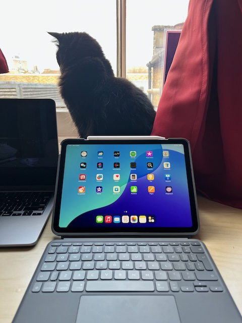GirlCat and my new iPad
2025-12-16–Cambridge Day 01
0945– Train to Cambridge
I took the morning train from King’s Cross to Cambridge for the first time. Despite wasting too much time doing the dishes in the morning, I arrived at the station well ahead of time; I even managed to stop to click a picture!

Boarding Train to Cambridge
0954–Train Ride
The train was rather empty, unlike the evening trains where you are lucky to even get a seat. Excited by my newly-bought iPad, I journaled for the better part of the journey, occasionally looking out into the wilderness, crop fields and grazing animals. I was so in the moment that I forgot to click good pictures.
The plan for the day was to head to The Fitzwilliam Museum first, spend time browsing artworks before heading home to Peter’s place. Later in the evening, we were attending The Royal Institution Christmas Lecture’s Dress rehearsals (which for many science communicators is a dream!). An exciting day was ahead of us, despite the gloomy and wet weather.
1111– The Fitzwilliam Museum
I arrived earlier than Peter (well I cheated by taking the bus instead of walking). After dropping our bags in the storage, we headed to the cafe where we spent close to an hour chatting away about #semanticClimate’s funding collaborations and my science communication summer work placement. Some very sweet cake and chai latte accompanied us.
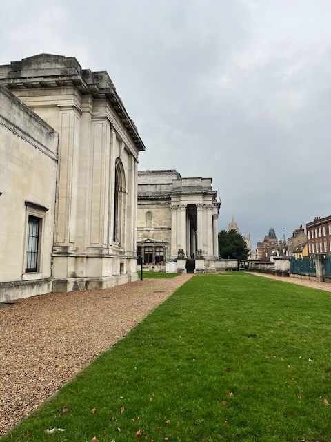The Fitzwilliam Museum entrance
1230– Exploring
Finally, it was time to explore! We made our way to the Ancient Egypt exhibit first. Upon entry, we were greeted by a mummy covered with Hieroglyphs drawings by humus, skillful workers. Having recently read about Hieroglyphs in Scott McCloud’s Understanding Comics, I was mesmerised to see them in real life for the first time! What I really liked from the very beginning was the emphasis on the artist as well as the art; the exhibit was peppered by quotes about or from humus. Humanising art this way brought forth the magic of being human; to be able to relate to the pain and joy of hard work through people from 3000 years ago!
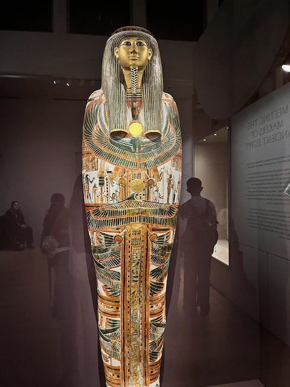Mummy covered in some hieroglyphs
Peter made for a great company. He ensured we did not miss a single artifact. Being with someone so knowledgeable was also helpful as he filled in some context that the descriptions missed. It was as if I had my own personal guide! Apart from Hieroglyphs, we saw pots, ornaments, fabrics, and much more.
I had lost track of time when we made it to the end. It was a juxtaposition of feeling like that I had spent countless hours in ancient Egypt and the reality of having spent only about two hours.
We got some Egyptian cats as souvenir before heading out.
With little time left before heading home, we decided to explore other bits of the museum.
We stumbled upon the Dutch Flower Art section. Anyone who knows me will know that I love botanical art. Although this was more common flowers in pot painted, it was beautiful nevertheless. There something so life-like in flowers and leaves motifs, which you can’t help but be mesmerised by. However, seeing so many paintings overwhelmed my heart a bit too much.
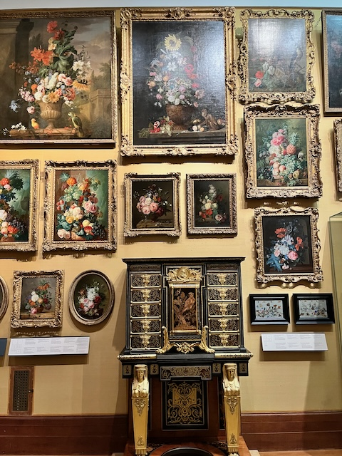Dutch flower paintings
Next, we whizzed past Italian Renaissance art. We stopped at a Trojan Horse painting; I learnt what it really means for the first time. Now I know how to use it in a sentence, I think. Peter also explained to me the idea of Renaissance, how artists from the time painted historical events using the elements from their present. For example, in the Trojan Horse painting, all the architecture is contemporary European, although the mythical event was from the AD.

Trojan Horse painting
Finally, we made it to the Nature section. It was mostly impressionist paintings including the ones by Monet. Peter told me how British people absolutely adore these paintings. The descriptions also said that the country side paintings evoke a sense of nationalism in people.
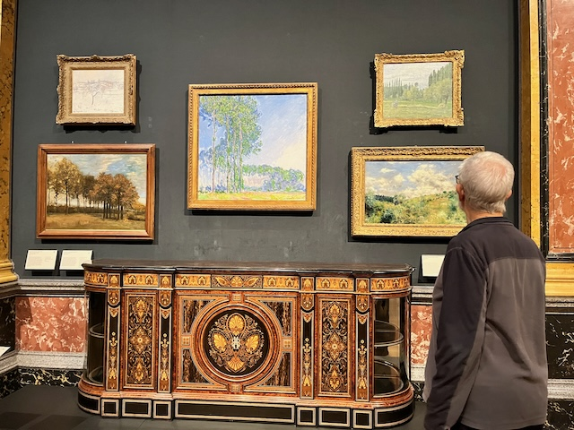Monet and Peter
The museum was quite exquisite, too. Marble pillars, detailed high ceilings, and the amazing spiral staircase lined by statues in the entrance. The whole museum felt like a palace or a mansion with the staircase being the entrance with different rooms filled with specific kinds of art. Of course, some spaces had furniture like chairs, chest drawers, which added to the more home-like feeling.

The ceiling
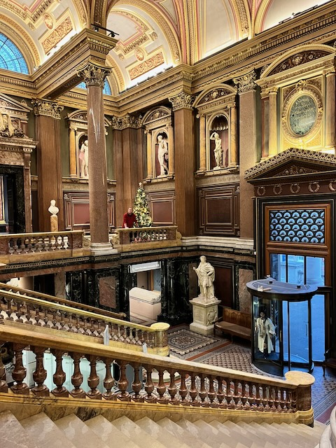The main entrance
I am sure Arushi would have enjoyed being in the museum; I would have perhaps picked up more nuances if she had accompanied. She will be here next year, I am sure, and this would be one of the places to go to.
I did more souvenir shopping before heading home.
1600– Home
After we came home, we fed our hungry stomachs with some omelette. It was my first time making one; I did rather poorly. Shell pieces made it inside the bowl more often than not. Soon, it was time to leave for The Technology Museum for the Royal Institution Lecture!
1800– RI Lecture
The museum had less audience than I anticipated, which made for a more relaxed setting. This year’s speaker is Dame Maggie Aderin-Pocock. The talk was on “Is There Life Beyond Earth”, detailing her work on Hubble and James Webb Telescope. The talk in itself was good; although there were several rough edges. I really liked the solar flare travel demonstration and the pessimistic and optimistic calculation of possibilities of other life forms existing in the universe. I am sure, the rough edges will be smoothened before the final lecture.
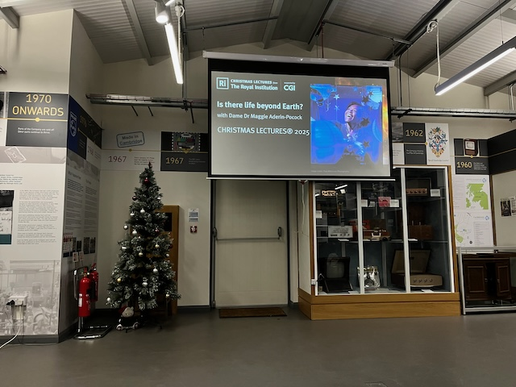Christmas Lecture rehearsals
What I also learnt in the end is that Maggie has ADHD and is dyslexic, but the fact that she was standing there giving lectures showcased what is possible despite the challenges you face within your own brain.
Peter and I walked back home, talking goofy things. We made some beans for dinner, and I got to bed, realising that the wonderful day had come to an end.
2025-12-17–Cambridge Day 02
Although I had a disturbed sleep (the same natural disaster nightmare), I woke up feeling fine. Headed downstairs to have breakfast, journalled until it was time to head out. In our itinerary was Wren Library, Quakers meeting, and Street Party. Peter and I were out by afternoon. As we walked towards city centre, Peter narrated the history of religion in Britain, I followed along as much as I could.
We first made our way to The Wren Library in Trinity College. Having seen Trinity in videos, it felt surreal to be there in person. After reaching the library, we were told that we weren’t allowed to get in through the college since Peter wasn’t a member. Trinity is where Newton was, so I was quite excited about my chance of seeing some of his work, and I did! They had The Principia on display along with Ramanujan’s work. We also saw many other artifacts such as Jane Austen’s books and A.A. Milne.
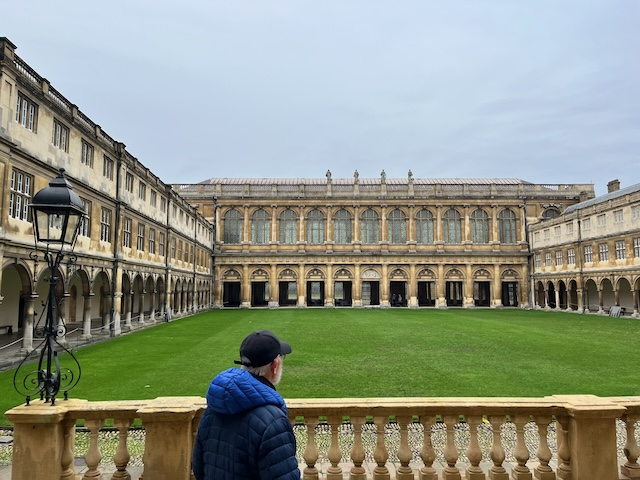Getting to Wren Library, Trinity College
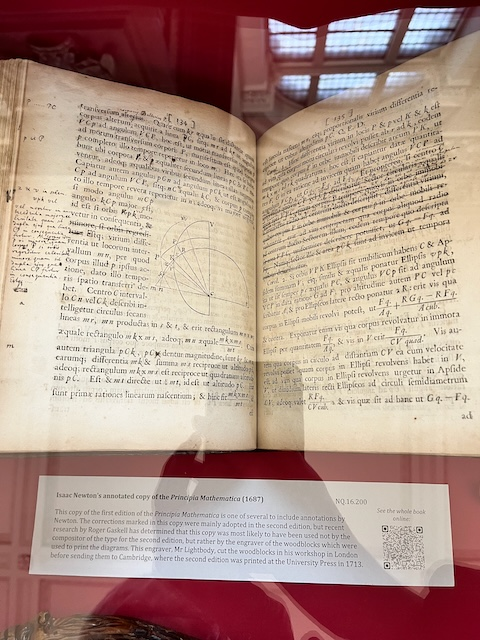The Principia
Next, we headed to Quaker House for lunch with Peter’s friends Kay, Roland and others. They were absolutely lovely people; the soup and bread was nice. I did not know what Quaker meetings were, but had said yes because Peter does not really give me choices anyway. After food, we left to the meeting room where chairs were placed in concentric circles. Peter instructed me that we would sit in silence for half an hour; people would speak if they felt like. I was very anxious for the first few minutes, but then my thoughts drifted away into thinking about my personal life (and miseries). In the end, Peter and Kay spoke about a Quaker who had been jailed for activism. We were served tea right after. I met more lovely people including an architect who suggested I visit Cambridge’s mosque.
On our way back home, Peter narrated Quaker’s history, and I was more and more drawn towards the religion. Previously, when Roland was asked about what Quakerism meant to him, he said it was thinking about the wellbeing of people. I should probably read more about Quakers.
On reaching home, we were tasked to make snow flakes from paper. We spent an hour chatting and cutting. It reminded me of festive season back home, when we people get together for shared activities. The street party went okay. We had about half a dozen neighbors turning up; one of them did block art, and I was fascinated by it.
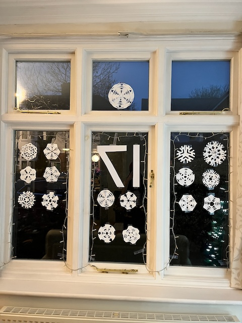The snowflakes decoration

Peter in bear suit
In the evening, Peter and I watched Sita Sings The Blues, an animated satirical take on Ramayana. It was a light movie, but boring at times. We made omelette for dinner and slept.
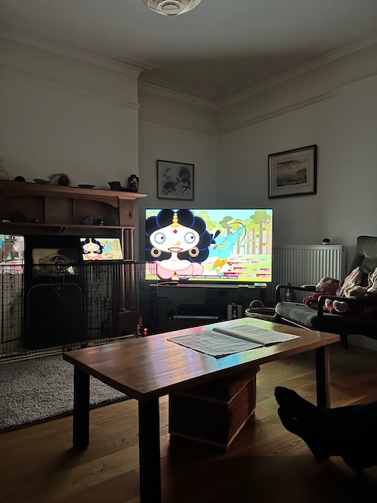Movie night with Peter, Sita Sings The Blues
2025-12-18–Cambridge Day 03
Lazy morning with neck pain. Read The Northern Lights all of morning. Left for The Whipple Museum early afternoon. The weather was at its worst. It was wet, windy, cold. It was probably the worst weather that I had experienced in the UK yet, and we had a long outdoor day ahead. After a brief pitstop at a second hand bookstore to buy Northern Lights, we went to the Zoology Museum for lunch. We sat next to whale skeleton while eating lunch. Peter was critical about some of my choices, and he was quite right.

Lunch next to the Whale
We did some souvenir shopping before heading to The Whipple Museum. The museum was fun, too. We saw many science artifacts including astrolabes, glass tubes, globes and the original Watson and Crick blue plate. We also had a lovely conversation with the person sitting at the reception.
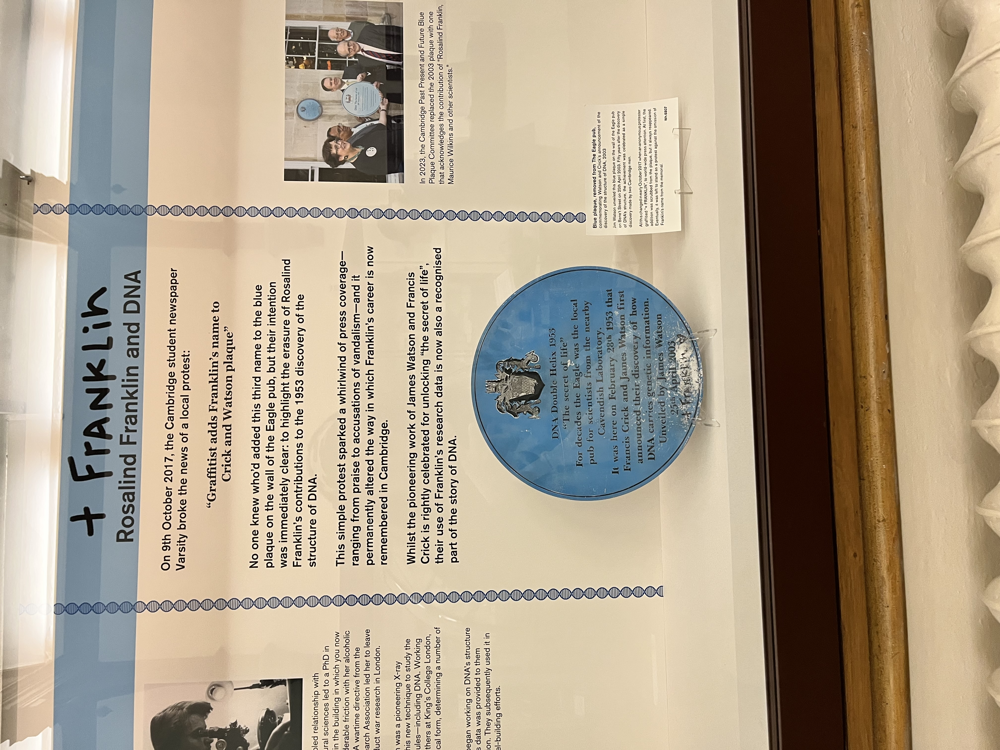Watson and Crick’s Blue plate, with Franklin’s name

Astrolabe
It was still pissing down when we stepped out. We briefly pit stopped at the Fitsbilly cafe for some wonderful buns before continuing our walk to Cambridge Botanic Gardens for the light trail walk. I was freezing and wet. The path was full of puddles. At this point, there was no brain space for overthinking, I just went with the flow. Stepped into puddles, jumped around, walked despite feeling cold and tired. The trail was lovely; loved how gymnosperms, especially conifers, looked in the dark. Some light shows had songs, and I enjoyed dancing to them. Just like that, we had spent an hour and half.

Cambridge Botanic Garden lighting

Peter and SNH
Finally, we left to the Cambridge station. Peter gave me some useful advice, some were a bit critical and I did not know how to take them. Took a slow train back to London. Met Karin and Dan after 2 weeks, ate dinner and went to bed.
Grateful to Peter and Judith for this wonderful experience.
2025-12-19– Day At Home
After a packed few days, I decided to stay back at home and work. Got some back-ups from term 01, wrote for a bit, and read the book.
Melancholy of the 19th hit me.
2025-12-20– Day With Coincidence
I spent the morning backing-up one of the other modules. After contemplating for some time, I decided to give Wellcome Collection another shot (after the previous disaster). But, it was a beautiful sunny day, and I chose to be brave.
And life could not have it better. I bumped into Meghna, a YIF-cum-Chevening scholar. She was with another YIF, Ameek. We connected over science communication. I spent three hours co-working. I finally got myself to update this blog, and make a draft LinkedIn post.
Later, we went out to eat. Ameek was an interesting person, and I did not want to miss out on interacting with a YIF. I went along with them. I told them about why I do science communication, he asked more about the direction science communication is taking. He also asked me about what the one thing I would communicate to someone who has not taken science since high school. Many of his questions made me contemplate quite a bit. I also had some good South Indian food at Sagar. After a quick drop-by to Boots, we left. Wonderful day.
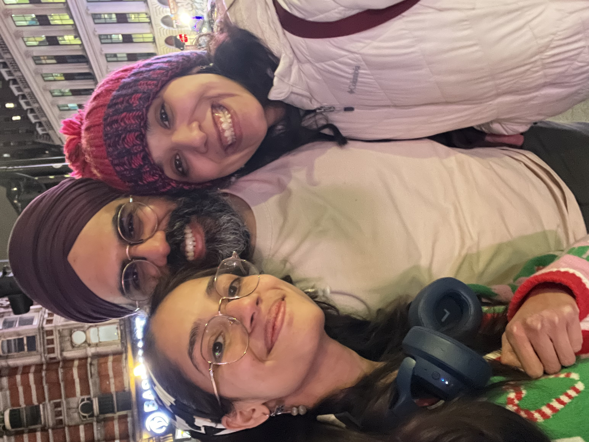Meghna, Ameek, and SNH outside Warren Street tube station
With that, a very memorable week came to an end.